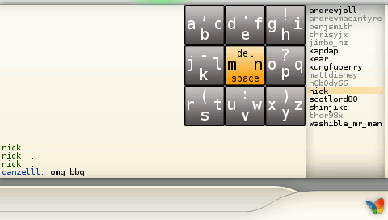
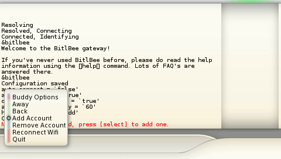
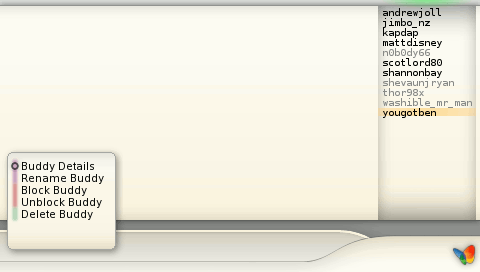

How to use AFKIM
Link: How to use the danzeff Keyboard

This is the main AFKIM display. The green highlighter at the top of the screen shows which area is selected: Buddy list or Chat window.
When the buddy list is selected you can use up and down to choose which buddy to talk to, then press X or [START] to go to the Chat window.
SENDING A MESSAGE -
When in the Chat window the keyboard will be shown, type your message with the danzeff keyboard, then press enter (digital down) to send it.
To return to the buddy list press [START].
You can press [SELECT] at any time to pop up the menu.

This is the AFKIM main menu, the items here are self explanitory except for 'Buddy Options' which is a submenu for managing your buddies.
The menu controls are as follows:
- Up/Down - Change the selected item up/down.
- X - Use the current menu item.
- O - Go up to the previous menu.
- [SELECT] - close the menu.

When you choose an item from the 'Buddy Options' submenu it will be applied to the currently selected buddy.